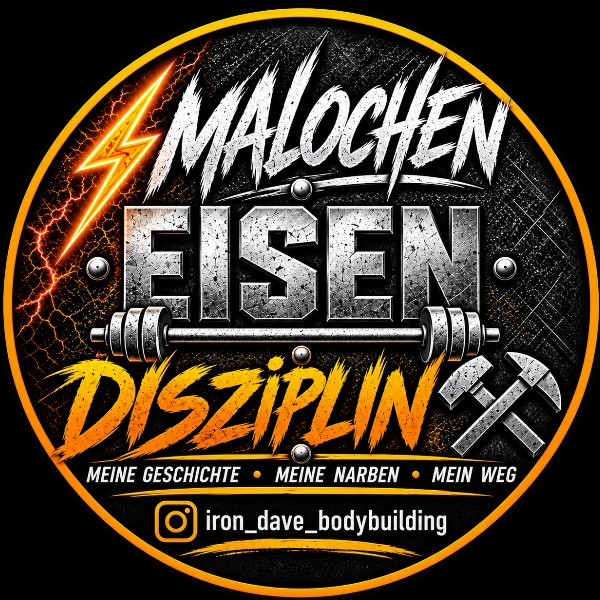

Deine Grundlage
IRON DAVE BASIS
99 € / Monat
Monatlich kündbar
Individueller Trainings- und Ernährungsplan. Check-in alle zwei Wochen und persönliche WhatsApp-Antwort innerhalb von 48 Stunden.
Alle BASIS-Leistungen ansehen →Online-Bodybuilding-Coaching · Männer 30+
Online-Coaching für Männer 30+
mit oder ohne TRT.
Ich bin Dave – Bodybuilder und Vollzeit-Elektriker. Ich helfe dir, Muskeln aufzubauen und Körperfett zu reduzieren: mit einem Plan für Training und Ernährung, der zu deinem Job und deinem Alltag passt.
15 Minuten · kostenlos & unverbindlich
03:45 Uhr ist meine Trainingszeit. Dein Plan passt zu deinen Zeiten.

Individuell geplant.Training & Ernährung
Im Alltag umgesetzt.Beruf & Training verbinden
Regelmäßig überprüft.Entwicklung & Anpassung
Für wen ich da bin
Du willst Muskeln aufbauen oder Körperfett reduzieren, aber dir fehlt eine klare Linie? Vielleicht trainierst du schon länger und kommst kaum voran. Vielleicht passen deine Mahlzeiten und dein Training noch nicht zu deinem Job.
Mein Coaching richtet sich an Männer ab 30 – mit oder ohne TRT. Für die Zusammenarbeit zählen dein Ziel, dein Ausgangspunkt und die Möglichkeiten, die du regelmäßig nutzen kannst.
Ob meine Betreuung zu dir passt, besprechen wir persönlich.
So funktioniert mein Coaching →Nach links wischen → · Zum Vergrößern antippen


Fünf Stationen meiner späteren Entwicklung. Mein Weg begann bereits mit 18 und etwa 52 kg. Die Fotos zeigen meinen eigenen Weg und sind keine Zusage für bestimmte Ergebnisse im Coaching.
Dein Coaching
Individuelle Planung, regelmäßige Check-ins und Anpassungen anhand deiner Entwicklung. Wähle den Betreuungsumfang, der zu dir passt.
Deine Grundlage
99 € / Monat
Monatlich kündbar
Individueller Trainings- und Ernährungsplan. Check-in alle zwei Wochen und persönliche WhatsApp-Antwort innerhalb von 48 Stunden.
Alle BASIS-Leistungen ansehen →Mehr Austausch. Engere Begleitung.
149 € / Monat
Monatlich kündbar
Alle BASIS-Leistungen mit wöchentlichem Check-in, persönlicher WhatsApp-Antwort innerhalb von 24 Stunden und Technikfeedback.
Alle PLUS-Leistungen ansehen →So starten wir
Was möchtest du verändern? Wo stehst du im Training und wie viel Zeit kannst du einplanen?
In einem kostenlosen, unverbindlichen Gespräch von 15 Minuten klären wir dein Anliegen und welches Angebot zu dir passt.
Wir vereinbaren Umfang, Preis und Start deiner Betreuung. Danach folgen Buchung und Bezahlung.
Kurz geklärt
Ja. Mein Coaching ist für Männer ab 30 mit oder ohne TRT geeignet. Auch wenn du keine Hormone oder Peptide nutzt, bist du bei mir richtig. Training, Ernährung und Fortschrittskontrolle bilden die Grundlage. Die vereinbarte Aufklärung zu PEDs & Peptiden bleibt Teil des entsprechenden Angebots. Medizinische Diagnosen und Behandlungsentscheidungen gehören in ärztliche Betreuung.
Nein. Das ist mein persönlicher Rhythmus. Deine Trainingszeiten richten sich nach deinem Alltag – morgens, nach Feierabend oder am Wochenende.
Eine Anfrage ist auch ohne langjährige Trainingserfahrung willkommen. Erzähl mir, wo du stehst. Im Kennenlernen klären wir, ob meine Betreuung zu deinem Vorhaben passt.
BASIS kostet 99 € und PLUS 149 € pro Monat. Beide Pakete sind monatlich kündbar. Das 15-Minuten-Kennenlernen ist kostenlos und unverbindlich. Pakete und Leistungen vergleichen.
Dein nächster Schritt
15 Minuten kostenlos kennenlernen. Wir klären, welche Unterstützung zu dir und deinem Alltag passt.
Weitere Wege
Vier Wochen · Persönlich erreichbar
Du nutzt eine Abnehm-Spritze unter ärztlicher Begleitung und möchtest Unterstützung bei Fragen zu Ernährung, Bewegung und deinem Alltag? Hier ist Raum für deine Fragen.
49 €
Einmalig für vier Wochen · keine automatische Verlängerung
Individuelle Trainings- und Ernährungspläne sind separat erhältlich. Medikamentenauswahl, Dosierung und medizinische Beschwerden gehören zum behandelnden Arzt. Kein medizinischer Notfallkontakt.
Kooperationen
Meine Kooperationspartner ansehen →